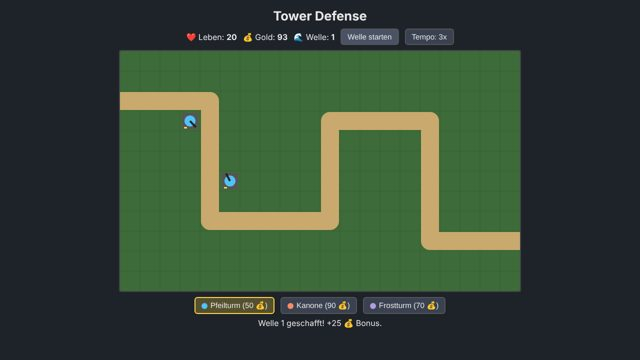
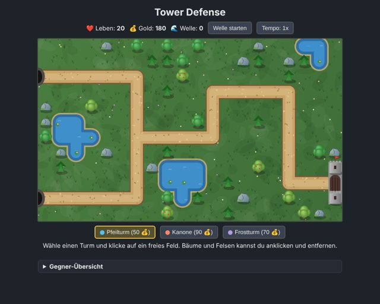
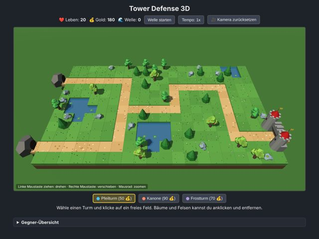
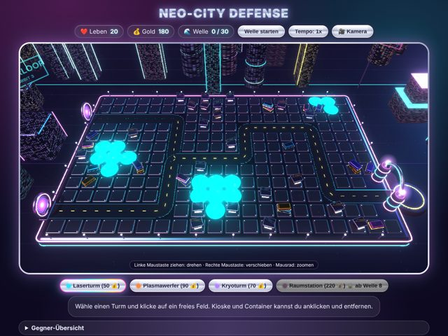
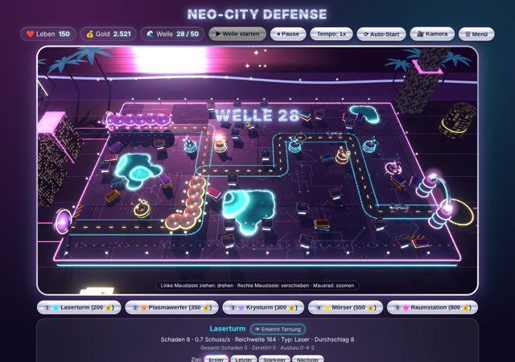
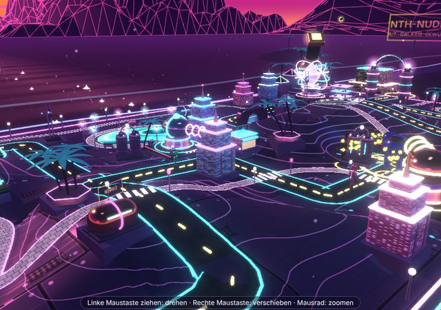

Alle Versionen
So hat sich Neo-City Defense entwickelt – vom einfachen 2D-Spiel bis zur Alien-Invasion in Neo-Miami. Jede Version ist komplett spielbar.

Version 1
Einfaches 2D-Spiel
- Ein Weg, drei Türme (Pfeil, Kanone, Frost)
- Drei Gegnertypen, Upgrades bis Stufe 3
▶ Spielen

Version 2
2D mit Detailkarte
- Zwei Startwege, die sich vereinen
- Bäume, Felsen und Seen
- Gegner mit kleineren Gegnern im Inneren
- Zwei Ausbaupfade: Reichweite und Schaden
▶ Spielen

Version 3
3D-Landschaft
- Umbau auf 3D mit Three.js
- Bewegliche Kamera (drehen, verschieben, zoomen)
- Low-Poly-Wiese mit Burg, Höhlen und Seen
▶ Spielen

Version 4
Chromecore-Sci-Fi-Stadt
- Chrom, Neon und Bloom-Leuchten
- Sci-Fi-Gegner ohne Lebensbalken
- Raumstation mit Raumschiffen
- 30 Wellen mit Endboss
▶ Spielen

Version 5
Retro-Synthwave
- Sonnenuntergang, Meer, Berge und Palmen
- Stufen-Drohnen 1–5 und Spezialgegner
- Bosse bis Welle 50, Mörser, 3 Ausbauwege mit je 5 Stufen
- Hauptmenü, Speichern, Musik und Sound
▶ Spielen

Version 6 · aktuell
Alien-Invasion in Neo-Miami
- Aliens mit Lauf-, Krabbel- und Schwebe-Animationen
- Hügelige Serpentinen-Karte mit Tunnelberg, Seen und Gehwegen
- Retro-Miami-Stadt mit Strand, Autos und Tag-Nacht-Wechsel
- Türme ändern ihr Aussehen je Ausbau, Spezialfähigkeiten, Erfolge
▶ Spielen